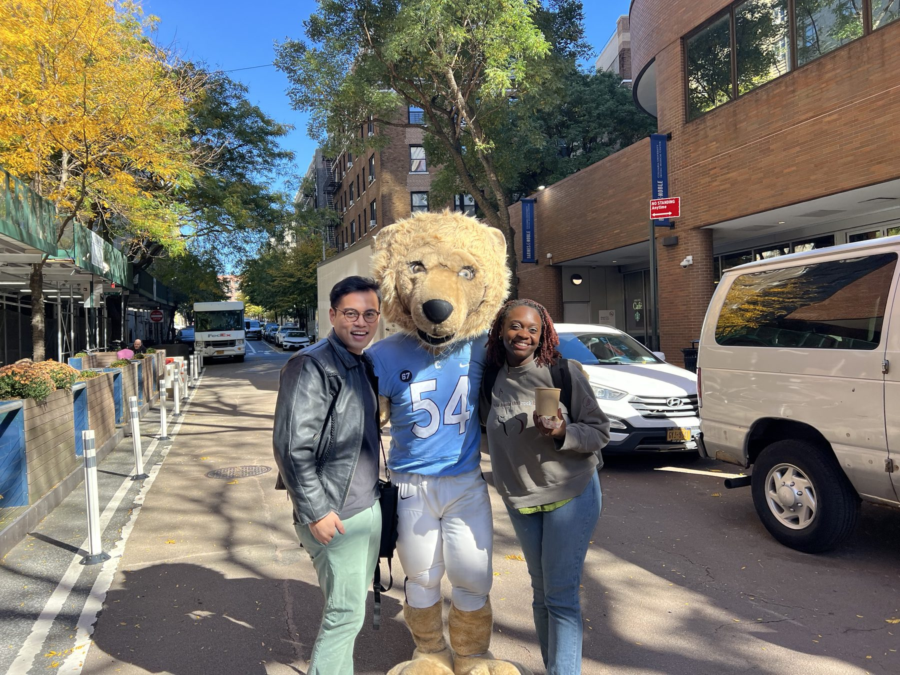

MPH in Population & Family Health with a Certificate in Health Communications, Columbia University Mailman School of Public Health, Class of 2026. Here's how my coursework maps to the skills I bring to teams.
Quantitative training in study design, statistical programming, and turning raw data into decisions.
Statistical programming in R: data wrangling, visualization, and reproducible analysis pipelines.
Project: Interactive Plotly dashboard »Designing dashboards and visual narratives that make complex health data legible to decision-makers. Skills I now use daily managing a statewide youth health analysis.
Study design, sampling, measurement validity, and the craft of asking answerable questions.
Cost-effectiveness thinking for programs and policy: what it takes for good interventions to be sustainable ones.
The certificate concentration: crafting messages that meet people where they are, across media and audiences.
Theory and practice of persuasive, culturally grounded health messaging.
Project: Lerner Center competition entry on childhood vaccination »How social platforms, influencers, and digital culture shape health behavior, and how public health can keep up.
Project: New media campaign presentation »Risk communication under uncertainty: translating evidence for the public without inflating or minimizing.
Project: Press release on the "fibermaxxing" trend »Op-eds, policy memos, and press materials that argue clearly and land with real audiences.
Project: Op-ed, "Dating Apps Have Evolved. Why Hasn't Public Health?" »Designing information, services, and systems that people can actually understand and use, with literacy as a health equity issue.
Designing programs backwards from outcomes, and knowing whether they worked.
Logic models, evidence-informed planning, and evaluation frameworks from needs assessment through outcomes.
Project: "Every County Counts" full program plan »Systems-thinking applied to intervention design. I later returned to this course as its Graduate Teaching Assistant, facilitating sections for 40 students.
Designing rigorous studies end to end: research questions, instruments, sampling, and field data collection.
The operational core of program leadership: budgets, timelines, stakeholders, and communicating progress to the people who need to hear it.
How health systems actually work, and how to move them.
The structure, financing, and politics of US and global health systems.
Policy analysis and advocacy: building the case for change with evidence.
Project: Policy memo on male suicide in the US »The department core: population and family health with equity at the center.
Epidemiology, prevention science, and policy for HIV and STIs. Academic grounding for a decade of my professional work.
Life-course frameworks for reproductive health and the systems that serve families.
The developmental science and service systems behind healthy adolescence, directly relevant to my current youth health work with the Hawaii Department of Health.
Mapping feedback loops, leverage points, and unintended consequences in complex health systems.
Global perspectives on LGBTI health, stigma, and rights-based approaches to care, deeply connected to my decade of HIV work.
Advocacy strategy grounded in human rights frameworks: coalitions, campaigns, and accountability.
“The Bidirectional Dynamics of Positive Affect and Social Connection: A Network Perspective”
This paper explores how positive emotions and social connection reinforce one another over time, viewed through a network science lens. It brings together two of my longest-running interests, psychology and community, and reflects the kind of question I love most: not just what makes people healthy, but what makes them flourish together.

I came to graduate school after eight years in the field, which changed how I learned. Every framework had a face attached: a client, a colleague, an outbreak, a campaign. My coursework sharpened the instincts practice had given me, and my practice kept the coursework honest.